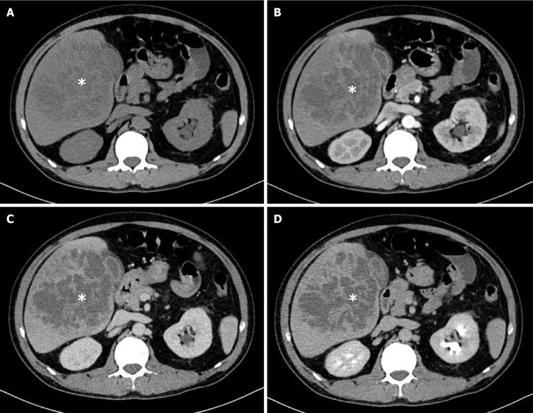
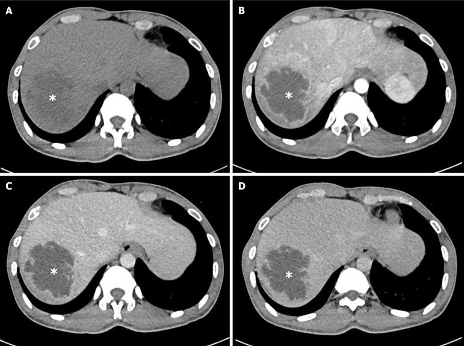
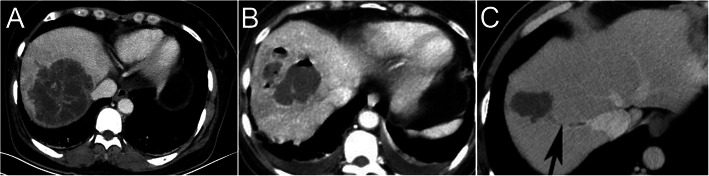

103 — Áp-xe gan sinh mủ do Klebsiella pneumoniae & thể tăng độc lực (hvKP): đọc CT, phân tầng nguy cơ và ngưỡng dẫn lưu / Klebsiella pyogenic liver abscess
Tags: pattern:ap-xe pattern:khong-dong-nhat pattern:hoai-tu vung:gan vung:duong-mat score:CT-features protocol:CT-4-pha protocol:choc-hut-dan-luu
Mức chắc chắn (certainty): tổng hợp y văn (literature synthesis) — 1 loạt cohort Việt Nam 106 ca (World J Hepatol 2026, PMC12968706), 1 loạt 100 ca KPLA (BMC Infect Dis 2020, PMC7296744), 2 phân tích gộp (Gastroenterol Res Pract 2022 — PMC9033355; Int J Med Sci 2026 — PMC13133893), 2 bài tổng quan (Gastroenterol Res Pract 2013 — PMC3806164; Mol Med Rep 2026 — PMC12829308) và 2 ca nguyên văn (Cureus 2026 — PMC13270909; Pak J Med Sci 2026 — PMC13170020). Số liệu lấy nguyên từ bài gốc, tên tác giả đối chiếu PMCID.
Bài này trả lời 4 câu hỏi khi gặp một ổ giảm đậm độ trong gan: (1) Dấu hiệu CT nào khiến nghĩ áp-xe do K. pneumoniae chứ không phải tụ dịch/u hoại tử? (2) Có khí, có vách, có huyết khối tĩnh mạch gan thì thay đổi xử trí thế nào? (3) Ai phải khám mắt/soi đáy mắt ngay? (4) Ngưỡng nào thì chọc hút, đặt catheter hay mổ? Nối 104 – Nhiễm trùng nang gan trong PLD/ADPKD (thể nang), 163 – Pylephlebitis & huyết khối TM mạc treo (huyết khối tĩnh mạch cửa) và 475 – Viêm nội nhãn nội sinh do vi khuẩn (biến chứng mắt — đường lan của chính bài này).
1. Tổng quan bệnh học – cơ chế hình ảnh
1.1 Vì sao K. pneumoniae tạo ra áp-xe "vách dày, không đều, không đồng nhất"
- Vỏ polysaccharide (K1/K2) + yếu tố tăng độc lực: Klebsiella có vỏ polysaccharide dày chống thực bào và chống ly giải bởi bổ thể; thể tăng nhầy (hypermucoviscous) — điều hòa bởi rmpA/rmpA2 trên plasmid độc lực, mang hệ lấy sắt aerobactin (iuc locus), salmochelin, yersiniabactin — là nền của hvKP (Mol Med Rep 2026, PMC12829308). Vỏ nhầy làm ổ nhiễm lan nhanh, hoại tử rộng, nhiều vách thay vì một ổ mủ đơn thuần.
- Vì sao CT thấy "vách ≥ 1 mm" và "cấu trúc không đồng nhất": hoại tử hóa lỏng không đều trong một ổ lớn → mô đệm hoại tử còn lại tạo vách không hoàn chỉnh; sản phẩm mủ – mảnh mô – huyết khối nhỏ tạo đậm độ hỗn hợp thay vì một "túi dịch" thuần nhất. Định nghĩa đa ổ (multilocular) trong y văn CT là có ≥ 1 vách dày ≥ 1 mm (BMC Infect Dis 2020, PMC7296744).
- Vì sao ngấm viền và "ngấm quanh tổn thương" (perilesional enhancement): viền là vỏ xơ + nhu mô gan bị ép viêm còn tưới máu, trong khi trung tâm mủ hoại tử không có mao mạch → ngấm viền, trung tâm luôn giảm đậm độ ở mọi thì. Đây là điểm khác cốt lõi với u: u ác có mô sống nên vẫn có phần ngấm ở thì nào đó (xem mục 2).
- Vì sao có khí: lên men acid hỗn hợp trong ổ mủ (xúc tác formic hydrogenlyase) sinh khí — gặp chủ yếu ở bệnh nhân đái tháo đường kiểm soát kém, và khí là yếu tố tiên lượng tử vong độc lập (mục 4).
- Vì sao lan mắt/não/phổi: vi khuẩn xâm nhập tiểu tĩnh mạch gan → huyết khối viêm tĩnh mạch gan (septic thrombophlebitis) → tắc mạch nhiễm khuẩn tới phổi (thuyên tắc phổi nhiễm khuẩn) và qua tuần hoàn hệ thống tới mắt, màng não. Đây là cơ chế của hội chứng áp-xe gan do Klebsiella xâm lấn (invasive KPLA syndrome — IKPLAS). Trên CT, dấu hiệu tương ứng là khuyết ngấm thuốc trong tĩnh mạch gan/tĩnh mạch chủ dưới (BMC Infect Dis 2020, PMC7296744).
1.2 Ngưỡng định lượng nằm lòng (bắt buộc nhớ)
| Chỉ số | Con số | Nguồn |
|---|---|---|
| Tỷ lệ mắc áp-xe gan sinh mủ | 2,3–3,6/100.000 (Âu – Mỹ) so với 14–18/100.000 (châu Á) | World J Hepatol 2026 (PMC12968706) |
| K. pneumoniae chiếm bao nhiêu ca áp-xe gan sinh mủ (miền Nam Việt Nam, 2021–2024) | 78,3% (83/106); cấy mủ 71,9%, cấy máu 78,6% | cùng nguồn |
| Đái tháo đường trong nhóm K. pneumoniae so với nhóm khác | 55,4% so với 30,4% (P = 0,034) | cùng nguồn |
| Bờ tổn thương không đều/đa cung | 96,4% (nhóm K. pneumoniae) so với 82,6% (P = 0,038) | cùng nguồn |
| Cấu trúc trong không đồng nhất | 89,2% so với 60,9% (P = 0,003) | cùng nguồn |
| Ngấm quanh tổn thương / khí trong ổ / khí đường mật | 61,3% / 11,3% / 7,5% | cùng nguồn |
| Số ổ: đơn độc / nhiều ổ | 79,2% / 20,8% | cùng nguồn |
| Vị trí: thùy phải / thùy trái / hai thùy | 56,6% / 29,2% / 14,2% | cùng nguồn |
| Tử vong trong viện (toàn bộ / nhóm K. pneumoniae) | 10,4% (11/106) / 13,3% so với 0% | cùng nguồn |
| Đường kính lớn nhất trung bình (loạt 100 ca KPLA) | 7,93 ± 2,32 cm (ESBL 8,17 ± 2,79 cm) | BMC Infect Dis 2020 (PMC7296744) |
| Đa ổ / có khí / vỡ tự phát / viêm tắc TM gan | 82,6% / 17,4% / 9,3% / 4,65% | cùng nguồn |
| Tử vong chung của áp-xe gan do K. pneumoniae | 2–18% | Gastroenterol Res Pract 2013 (PMC3806164) |
| Tử vong khi có so với không có ổ nhiễm di căn | 16–17% so với 0–1,1% | cùng nguồn |
| Tỷ lệ có ổ nhiễm di căn (màng não/mắt) | 10–45% | cùng nguồn |
| Thuyên tắc phổi nhiễm khuẩn trong KPLA (gộp 6 nghiên cứu, 1.158 ca) | 6% (KTC 95%: 3–9%); tử vong 12%; dấu feeding vessel 52% | Gastroenterol Res Pract 2022 (PMC9033355) |
| Áp-xe có khí — yếu tố tiên lượng tử vong (gộp 57 nghiên cứu, 126.056 ca) | aOR 10,16 (KTC 95%: 4,01–25,7) | Int J Med Sci 2026 (PMC13133893) |
| Ngưỡng dẫn lưu kinh điển | > 5 cm: dẫn lưu qua da là first-line; < 5 cm: có thể chỉ kháng sinh; < 3 cm: kháng sinh + theo dõi sát | Pak J Med Sci 2026 (PMC13170020); Mol Med Rep 2026 (PMC12829308) |
2. Mẫu hình + chẩn đoán phân biệt theo hình thái & vị trí (Gamut)
Câu hỏi lọc: "Ổ giảm đậm độ trong gan + sốt + đau hạ sườn phải + đái tháo đường, bờ không đều, trong không đồng nhất, trung tâm không ngấm ở MỌI thì?" → áp-xe gan, và ở Việt Nam nghĩ K. pneumoniae trước.
- Một ổ lớn thùy phải, bờ không đều, không có bệnh đường mật: thể cryptogenic – hvKP điển hình (nhóm K. pneumoniae trong loạt Việt Nam: thùy phải 55,4%, đơn độc 78,3%). Bệnh nhân thường không có sỏi mật.
- Nhiều ổ, có bệnh đường mật hoặc sau ERCP: nghĩ nguồn đường mật (E. coli, Enterococcus, kỵ khí) hoặc ESBL — loạt 100 ca: tiền sử bệnh đường mật 78,6% ở nhóm ESBL so với 26,7% (P < 0,001); ung thư tiêu hóa 50% so với 7,0%.
- Có khí trong ổ: áp-xe sinh khí (gần như luôn là Klebsiella ở người đái tháo đường) — aOR tử vong 10,16; đây là dấu hiệu phải đọc và ghi vào báo cáo, không phải chi tiết phụ.
- Kèm khuyết ngấm trong tĩnh mạch gan / tĩnh mạch cửa: nghĩ IKPLAS → tầm soát mắt (soi đáy mắt), màng não, phổi ngay; nối 163.
- Ổ trong nang gan có sẵn (ADPKD/PLD): nhiễm trùng nang — bờ nhẵn theo thành nang, không vách; nối 104.
- Ổ "giả áp-xe" do u hoại tử: ung thư biểu mô tế bào gan (HCC) hoại tử, di căn hoại tử, u mô đệm đường tiêu hóa — có phần mô sống ngấm thuốc thì động mạch, không có khí, không có huyết khối viêm.
- Ổ do amíp (Entamoeba histolytica): bờ nhẵn, vỏ mỏng, không vách, thường thùy phải đơn độc, không có tiền sử bệnh đường mật; chẩn đoán bằng huyết thanh/kháng nguyên, không dẫn lưu trừ khi bội nhiễm/sắp vỡ.
- Nang sán (Echinococcus) bội nhiễm: có vỏ/màng đặc trưng, vôi hóa, tiền sử dịch tễ — cấm chọc mù (nguy cơ sốc phản vệ/sóng giống); nối 139.
- Tụ máu/biloma/seroma sau can thiệp: có tiền sử can thiệp, đậm độ theo thời gian (máu 35–70 HU thì không cản quang), không có vỏ ngấm mạnh.
3. Bảng so sánh phân biệt (ma trận đối chiếu)
| Thực thể (entity) | Hình ảnh điển hình | Chốt vào (rule-in) | Chốt loại (rule-out) | Gợi ý xác nhận |
|---|---|---|---|---|
| Áp-xe gan do K. pneumoniae | Ổ thùy phải, bờ không đều/đa cung (96,4%), trong không đồng nhất (89,2%), vách ≥ 1 mm, ngấm viền, ngấm quanh tổn thương | Sốt + ĐTĐ + bờ không đều + trong không đồng nhất + trung tâm giảm đậm độ ở MỌI thì | Có mô ngấm thuốc thì động mạch rõ + thải thuốc (→ HCC); bờ nhẵn vỏ mỏng (→ amíp/nang) | Cấy máu trước kháng sinh (dương 78,6% trong nhóm KP); cấy mủ khi dẫn lưu |
| Áp-xe đường mật / ESBL | Nhiều ổ, thùy trái, giãn đường mật, có sỏi/khí đường mật | Tiền sử bệnh đường mật (78,6%) + nhiều ổ + giãn đường mật | Ổ đơn độc thùy phải không giãn mật → nghĩ hvKP | Cấy mủ + cấy mật; MRCP nếu nghi tắc mật |
| Áp-xe sinh khí | Khí trong ổ (mức khí-dịch hoặc bóng khí), thường ĐTĐ kiểm soát kém | Khí trong ổ + ĐTĐ + nhiễm trùng huyết | Khí chỉ trong đường mật (sau ERCP) → không phải áp-xe sinh khí | aOR tử vong 10,16 → dẫn lưu sớm, ICU sớm |
| IKPLAS (có ổ di căn) | Ổ gan + thuyên tắc phổi nhiễm khuẩn, viêm nội nhãn, viêm màng não | Khuyết ngấm trong TM gan + khí + đau mắt/mờ mắt + đau đầu | Chỉ ổ gan, không khuyết mạch, không triệu chứng mắt/thần kinh | Soi đáy mắt 2 bên; CT ngực; chọc dịch não tủy nếu có dấu màng não |
| Nhiễm trùng nang gan (PLD/ADPKD) | Nang có sẵn thành dày, dịch tăng đậm độ, không vách mới | Sốt + CRP > 50 mg/L + ổ FDG trong nang | Bờ/vách không theo thành nang → áp-xe nguyên phát | PET/CT, DWI; nối bài 104 |
| HCC hoại tử | Khối có mô sống ngấm thì động mạch + thải thuốc, xơ gan, AFP tăng | Ngấm động mạch + washout + xơ gan | Trung tâm giảm đậm độ mọi thì, không mô sống → áp-xe | LI-RADS (bài 121), AFP, sinh thiết chọn lọc |
| Áp-xe amíp | Ổ bờ nhẵn, vỏ mỏng, không vách, thùy phải, đơn độc | Bờ nhẵn + dịch tễ + huyết thanh amíp dương | Bờ không đều + vách + khí → vi khuẩn | Huyết thanh/kháng nguyên E. histolytica; đáp ứng metronidazole |
| Nang sán bội nhiễm | Nang có màng/vỏ, vôi hóa thành, có thể nang con | Vôi hóa + màng + dịch tễ + huyết thanh | Không vỏ/màng, không vôi hóa → áp-xe thường | Huyết thanh/ELISA; không chọc mù |

Hình thái áp-xe do K. pneumoniae: nhiều ổ, bờ không đều/đa cung, cấu trúc trong không đồng nhất (dấu *), từ thì không cản quang (A) → động mạch (B) → tĩnh mạch cửa (C) → muộn (D). Nguồn: World J Hepatol 2026 (PMC12968706), Fig 3, CC BY-NC 4.0, nguyên bản.
Cùng khung 4 pha, áp-xe do Streptococcus: bờ hơi không đều nhưng trong đồng nhất, không vách, ngấm viền (dấu *). Đặt cạnh hình trên để thấy "không đồng nhất" là dấu gợi ý K. pneumoniae chứ không phải thuộc tính của mọi áp-xe. Nguồn: World J Hepatol 2026 (PMC12968706), Fig 4, CC BY-NC 4.0, nguyên bản.Ba dấu hiệu phải ghi trong báo cáo (vì chúng đổi xử trí, không chỉ đổi chữ)
- Khí trong ổ → aOR tử vong 10,16 → dẫn lưu sớm + theo dõi ICU, không "kháng sinh rồi chờ".
- Vách ≥ 1 mm / nhiều ổ → ổ khó dẫn lưu bằng kim đơn thuần; catheter hiệu quả hơn chọc hút kim (thành công lâm sàng cao hơn, cải thiện nhanh hơn) — World J Hepatol 2026 (PMC12968706) dẫn lại bằng chứng ngẫu nhiên/gộp.
- Khuyết ngấm trong tĩnh mạch gan / TM chủ dưới → IKPLAS → khám mắt + thần kinh ngay trong 24 giờ.

(A) Áp-xe đa ổ thùy phải, vách dày. (B) Áp-xe có khí trong ổ (đen hoàn toàn) ở thùy trái. (C) Áp-xe đơn ổ nhưng thì tĩnh mạch có khuyết ngấm trong tĩnh mạch gan (mũi tên) — dấu hiệu của thể xâm lấn. Nguồn: BMC Infect Dis 2020 (PMC7296744), Fig 2, CC BY 4.0.4. Protocol + phân tầng + sơ đồ xử trí
4.1 Protocol chụp
- Siêu âm là đầu tay (rẻ, tại giường, định hướng chọc): ổ giảm âm, bờ không đều, có vách, đôi khi có echo trong lòng (mảnh hoại tử/khí).
- CT bụng 4 pha, lát ≤ 5 mm khi: nghi áp-xe phức tạp, đã có khí, nghi u hoại tử, hoặc trước can thiệp: không cản quang → động mạch (
35–40 giây) → tĩnh mạch cửa (70 giây) → muộn (3–5 phút). Bốn pha là điều kiện để chốt "trung tâm không ngấm ở mọi thì" (loại u) và thấy khuyết ngấm tĩnh mạch (chốt IKPLAS). - Đo và ghi: đường kính lớn nhất (cm), số ổ, vị trí thùy, vách ≥ 1 mm có/không, khí, khuyết ngấm TM gan/TM cửa/TM chủ dưới, ngấm quanh tổn thương, có giãn đường mật kèm theo (gợi ý nguồn đường mật).
- Không cần MRI thường quy; MRI/DWI hữu ích khi phân biệt với u hoại tử hoặc nang bội nhiễm (DWI sáng/ADC thấp = mủ đặc).
- X-quang/CT ngực khi có khó thở, ho ra máu, hoặc nghi thuyên tắc phổi nhiễm khuẩn (dấu feeding vessel 52%).
4.2 Phân tầng và ngưỡng xử trí
| Tình huống | Việc phải làm | Ngưỡng / số |
|---|---|---|
| Ổ < 3 cm, bệnh nhân tỉnh, không nhiễm trùng huyết | Kháng sinh đơn thuần + theo dõi sát (siêu âm/CT lại 48–72 giờ) | Mol Med Rep 2026 (PMC12829308) |
| Ổ 3–5 cm | Cân nhắc chọc hút kim hoặc kháng sinh; catheter nếu không cải thiện sau 48–72 giờ | Pak J Med Sci 2026 (PMC13170020) |
| Ổ > 5 cm | Dẫn lưu qua da (catheter) là first-line + kháng sinh | cùng nguồn |
| Đa ổ / vách dày ≥ 1 mm / dịch chưa hóa lỏng hết | Ưu tiên catheter (hiệu quả hơn chọc hút kim); có thể cần dẫn lưu nhiều lần/theo kế hoạch | World J Hepatol 2026 (PMC12968706) |
| Có khí | Dẫn lưu sớm + ICU/theo dõi sát | aOR tử vong 10,16 (PMC13133893) |
| Nghi IKPLAS | Soi đáy mắt 2 bên + khám thần kinh trong 24 giờ; CT ngực; chọc DNT nếu có dấu màng não | Ổ di căn 10–45%; tử vong 16–17% (PMC3806164) |
| Thất bại catheter / vỡ ổ / đa ổ không dẫn lưu được | Mổ (nội soi hoặc mở) | Mổ ở loạt Việt Nam: 3,8% (PMC12968706) |
| Kháng sinh | Theo ổ dịch: cephalosporin phổ rộng ± aminoglycoside; carbapenem khi nghi ESBL; thời gian ≥ 2–3 tuần tĩnh mạch rồi uống | PMC3806164 (loạt Đài Loan: 3 tuần TM + 1–2 tháng uống) |
flowchart TD
A["Ổ giảm đậm độ trong gan + sốt"] --> B["Siêu âm + CT 4 pha"]
B --> C{"Có khí trong ổ?"}
C -->|Có| D["Dẫn lưu sớm + ICU<br/>aOR tử vong 10,16"]
C -->|Không| E{"Đường kính lớn nhất?"}
E -->|"< 3 cm"| F["Kháng sinh + theo dõi 48-72 giờ"]
E -->|"3-5 cm"| G["Chọc hút kim hoặc kháng sinh"]
E -->|"> 5 cm"| H["Catheter dẫn lưu + kháng sinh"]
G --> I{"Cải thiện sau 48-72 giờ?"}
I -->|Không| H
F --> J{"Xấu đi / ổ to ra?"}
J -->|Có| H
H --> K{"Khuyết ngấm TM gan<br/>hoặc mờ mắt, đau đầu?"}
K -->|Có| L["Nghi IKPLAS: soi đáy mắt 2 bên<br/>+ CT ngực + khám thần kinh"]
K -->|Không| M["Theo dõi lâm sàng + CT lại"]
D --> K
L --> N["Kháng sinh phổ rộng 2-3 tuần TM<br/>± carbapenem nếu ESBL"]
M --> N
5. Biến thể bình thường & cạm bẫy
- "Trung tâm không ngấm" không đồng nghĩa áp-xe: u hoại tử lớn (HCC, di căn) cũng có trung tâm không ngấm; chốt là có mô sống ngấm thì động mạch + thải thuốc quanh ổ, và bối cảnh (xơ gan, AFP, tiền sử ung thư).
- Khí sau ERCP/đốt nhiệt không phải khí áp-xe: khí trong đường mật hoặc trong khoang đốt sau RFA/MWA là bình thường trong 2–4 tuần; khí trong lòng ổ mủ có vách mới là dấu hiệu xấu.
- Ổ nhỏ < 1 cm có thể bị bỏ sót ("satisfaction of search"): khi đã thấy một ổ lớn, phải quét toàn bộ gan ở thì tĩnh mạch cửa để tìm ổ thứ hai — 20,8% ca có nhiều ổ.
- Thùy trái hay bị đọc nhầm là dạ dày/tá tràng đầy dịch: dấu phân biệt là ngấm viền và đẩy các quai ruột, không có niêm mạc.
- Áp-xe gan + tràn dịch màng phổi phải: đừng chỉ gọi "tràn dịch phản ứng" — với K. pneumoniae phải loại thủng cơ hoành/vỡ ổ và thuyên tắc phổi nhiễm khuẩn (6%).
- Bệnh nhân đái tháo đường "chỉ sốt, không đau bụng": thể cryptogenic hay gặp ở người lớn tuổi; đừng chờ đau hạ sườn phải mới chỉ định siêu âm.
- Người đã dùng kháng sinh trước khi cấy: cấy máu âm tính không loại trừ Klebsiella — vẫn phải lấy mủ khi dẫn lưu (cấy máu dương 78,6% chỉ khi lấy trước kháng sinh).
6. Tự lượng giá — Blind Quiz
Ca 1 — Nam 58 tuổi, đái tháo đường type 2, sốt 39 °C 4 ngày, đau hạ sườn phải. Nhìn hình, mô tả trước khi đọc đáp án.

- Hỏi: ổ ở thùy nào? Bờ và cấu trúc trong ra sao? Ngấm viền hay ngấm toàn bộ? Chẩn đoán và 3 việc phải làm trong 24 giờ?
Bấm để hiện đáp án
- Ổ giảm đậm độ lớn ở thùy phải gan, bờ không đều, ngấm viền, trung tâm hoại tử không ngấm → áp-xe gan sinh mủ; ở bệnh nhân đái tháo đường tại Việt Nam, nghĩ K. pneumoniae đầu tiên (78,3% ca).
- Việc phải làm: (1) cấy máu trước kháng sinh; (2) siêu âm/CT đánh giá khí, vách, khuyết ngấm tĩnh mạch; (3) soi đáy mắt 2 bên để loại viêm nội nhãn nội sinh (ổ di căn 10–45%).
- Đo đường kính lớn nhất: nếu > 5 cm → catheter dẫn lưu + kháng sinh; nếu < 3 cm và bệnh nhân ổn → kháng sinh + theo dõi 48–72 giờ.
- Nguồn: Cureus 2026 (PMC13270909), Fig 1, CC BY 4.0.
Ca 2 — Nữ 62 tuổi, sốt, đường huyết 22 mmol/L, CT có ổ gan "lấm tấm đen" trong lòng. Câu hỏi: dấu hiệu đen đó là gì và nó đổi tiên lượng thế nào?
Bấm để hiện đáp án
- "Lấm tấm đen" là khí trong ổ mủ (hình B) — hậu quả của lên men acid hỗn hợp, gặp chủ yếu ở đái tháo đường kiểm soát kém.
- Áp-xe sinh khí là yếu tố tiên lượng tử vong độc lập: aOR 10,16 (KTC 95%: 4,01–25,7) trong phân tích gộp 57 nghiên cứu / 126.056 bệnh nhân → dẫn lưu sớm, không chờ kháng sinh đơn thuần; theo dõi ICU.
- Hình A cho thấy ổ đa ổ có vách (khó dẫn lưu bằng kim → chọn catheter); hình C cho thấy khuyết ngấm trong tĩnh mạch gan — dấu hiệu của thể xâm lấn, phải khám mắt/thần kinh.
- Phản biện nguồn: phân tích gộp trên không xác nhận K. pneumoniae là yếu tố tiên lượng tử vong (khác với loạt Việt Nam 106 ca: 13,3% so với 0%), có thể do khác biệt quần thể và cỡ mẫu — dùng bờ/cấu trúc để gợi ý tác nhân, nhưng khí + ổ di căn mới là yếu tố chốt tiên lượng.
- Nguồn: BMC Infect Dis 2020 (PMC7296744), Fig 2, CC BY 4.0; Int J Med Sci 2026 (PMC13133893).
Bài liên quan chéo
- 100 – Tổng quan hệ Bụng
- 104 – Nhiễm trùng nang gan trong PLD/ADPKD
- 120 – Khối gan nền: tiếp cận ổ giảm đậm độ
- 121 – LI-RADS (loại u hoại tử)
- 139 – Sán lá gan
- 147 – Sốt kéo dài & ổ nhiễm ẩn trong bụng
- 163 – Pylephlebitis & huyết khối tĩnh mạch mạc treo
- 475 – Viêm nội nhãn nội sinh do vi khuẩn
- 1422 – hvKP bacteremia KHÔNG có ổ gan: bản đồ ổ di căn ẩn & tầm soát mắt–não–phổi
Không dùng để chẩn đoán độc lập khi chưa có người hướng dẫn.